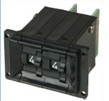
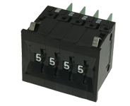
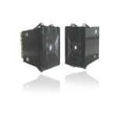
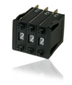
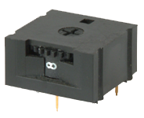

| Thumb Wheel Switches | |
|  |
Series Tws 80
Description: Integral Type TWS-80 Thumb Wheel Switches are high quality switches of small size for use in a wide variety of applications in Instrumentation, Machine Controls, Process Controls, etc. TWS-80 is a sturdy rear-mounted type fixed with screws to the panel. Available with an extensive range of output codes, up to 10 modules can be easily coupled with sides, to form any combination as per customer's requirements. The switches have a positive detent action so that the positions snap into place. The switches have large digits hot-stamped for good visibility. The switches can be ordered either as complete assemblies or individual modules with sides separately. |
|  |
Series SL 82
Description: Integral (Series 20) Toggle Switches of the PCB mounting type with straight operation meet the needs of customers wanting a high quality, high current carrying switch in small volume. Standardisation of design in components used from single to four poles, careful choice of materials and attention to details result in reliable and consistent performance. They are available with popular actuator types and sizes. Design variations in the contacts result in all the required switching functions.Integral Type SL-82 Series Thumb Wheel Switches are slim compact switches of high quality used in a wide variety of applications in Instrumentation, Machine Controls, Process Controls, etc. The switches are fixed from front of the panel, and are snap-mounted without the aid of screws. Snap-up design between sections also eliminates screws for fixing the sections together and virtually unlimited number of sections can be latched together. The switches are available with an extensive range of output codes, and have large sized digits hot-stamped for good visibility. Modules like Dummy, Projected Dummy are available for separating various sections functionally if needed. The above design makes it possible to alter an assembly consisting of sections by the customer at the site itself. The switches can be ordered either as complete assemblies or individual modules with sides separately. |
|  |
Series SL 83
Description: Integral Type SL-83 Series Thumb Wheel Switches are slim compact switches of high quality used in a wide variety of applications in Instrumentation, Machine Controls, Process Controls, etc. The switches are fixed from front of the panel, and are snap-mounted without the aid of Switches . The switches can be ordered either as complete assemblies or individual modules with sides separately. If sides are ordered separately, the order code is 8300 to represent 1 pair of sides. |
| Push Switches | |
|  |
Series PW 86
Description: Integral Type PW 86 series push wheel switches are easy to put together at
customers’ end since there is no hardware involved. It makes for a very compact
switch with facility to reach any digit easily because of bidirectional rotation. The
characters, hot stamped, are easily readable and the switch gives a crisp feel with
each change of digit. The swtiches can be ordered either as complete assemblies or
individual sections and sides separately.
FEATURES:
|
| Thumb Wheel Preset Switches | |
|  |
Series 88
Description: Series 88 is a PCB mountable Thumb Wheel Switch offering the most economical method of handsetting coded values. It eliminates wiring, requires minimum space and can be mounted horizontally or vertically to suit the application. 10 or 16 legend locations assure readability from top or side. Series 88 can be set by knurled wheel, screwdriver or optional
extended shaft and the finished bezel allows front panel mounting. Optional stops, coloured rotors, or special making are available.
FEATURES:
|